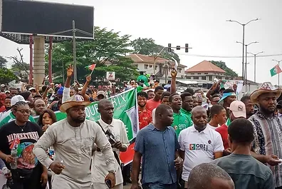
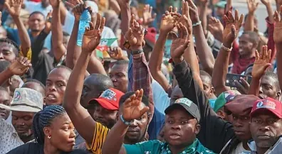

The Oyo State Labour Party is a progressive political organization dedicated to representing the interests of the people of Oyo State.
Rooted in the principles of fairness, social justice, and good governance, we strive to build a state that prioritizes the welfare of all citizens, particularly the working class, youth, and marginalized communities.
As a branch of the national Labour Party, we are committed to advocating for policies that promote equitable development, job creation, improved healthcare, quality education, and social empowerment. Our party believes in inclusive leadership that reflects the voice of the people and works tirelessly for the common good.
To be the leading party in Oyo State; piloting people driven agenda, economic transforming activities and actualization of good governance.
To run a political structure where selflessness, integrity, competence and focused leadership engenders a participatory, results-driven and people centered system to achieve good governance.
Our leadership, guided by democratic values and a strong sense of accountability, works closely with communities to address pressing issues and deliver on our promises. The Oyo State Labour Party is led by a dedicated team of passionate individuals committed to serving the people of Oyo State.
Chairman
State Treasurer
State Secretary